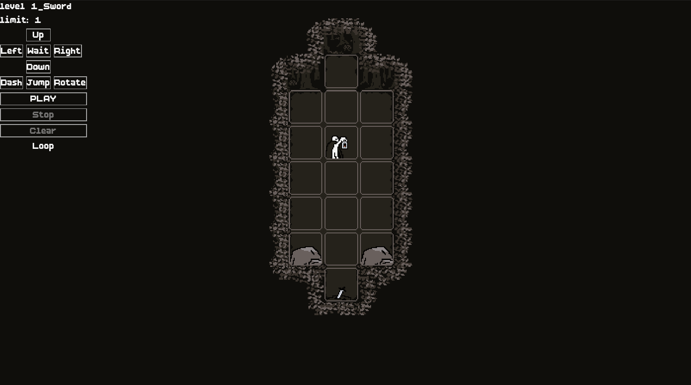
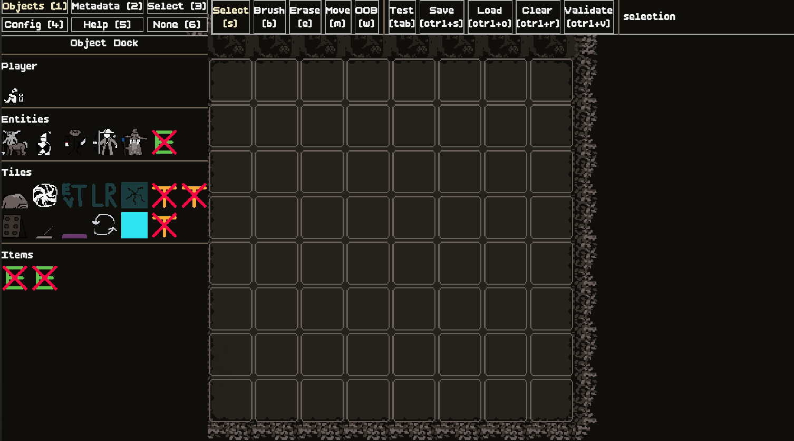

It's been a while since the last update. Honestly, we haven't gotten a crazy amount done, but we've been slowly chipping away at the game and making steady progress.
The biggest thing we've recently done is improve the Level Editor. Before we made an individual .tscn file
for each level, which didn't really scale all that well. Since we changed to a more data driven approach, we use .tres
files to store level data which can be loaded by the UI, simulator, or anything else that wants to know about how a level is defined.
The Level Editor's entire purpose is to be a fast and fluid way to create and edit these .tres files.
This is likely going to just be an internal dev tool, but maybe sometime in the future, we can encorporate it into the game
as a way for players to create and share their own levels.
Other things we've done is begin working on the animations (by we I mean Kob). We still haven't nailed down the final palette, style, etc..., but we're getting pretty close.
And for the final bit of good news, we're finally getting started on making the inital levels of the game. We also added some new tiles, items, and enemies. We hope to have a playable demo by the end of the year, but we'll see how it goes.
Until next time...

